Home › Fighting › Shinobi weapons
Shinobi weapons
Twenty-four classic weapons for your ninja: short and long blades, chain and rope weapons, polearms, parrying weapons and throwing tools. Most need Ninja weaponsmithing research and are made at a smithy. Enemy ninja carry them too, and with an NFRP storyteller one may turn up in a smuggler's stash.
Twenty-four classic weapons: blades, chain and rope weapons, polearms, parrying weapons and throwing tools. Most need Ninja weaponsmithing and a smithy; enemy ninja carry them too.
Blades
| Weapon | Hit (main attack) | What it is good at |
|---|---|---|
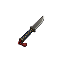 Tantō | 11 damage, 1.2 s | A short knife, quick in close and easy to hide. |
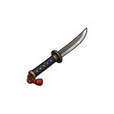 Kodachi | 15 damage, 1.5 s | A short curved sword that parries and cuts in one motion. |
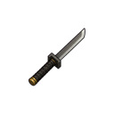 Ninjatō | 17 damage, 1.7 s | A straight sword carried on the back. |
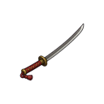 Tachi | 22 damage, 2.2 s | A long curved sword for wide drawing cuts. No research needed. |
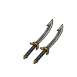 Twin hook swords | 16 damage, 1.6 s | Hooked blades that catch a foe's weapon. |
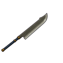 Zanbatō | 31 damage, 3.2 s | A huge cleaver: very slow, very heavy, cuts through armour. No research needed. |
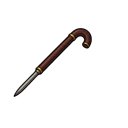 Shikomizue cane blade | 16 damage, 1.6 s | A walking cane with a hidden blade. |
Chain, rope and flexible weapons
| Weapon | Hit | What it is good at |
|---|---|---|
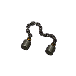 Kusari-fundō | 12 damage, 1.5 s | A weighted chain that strikes from outside sword reach. |
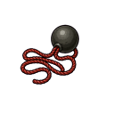 Meteor hammer | 19 damage, 2.4 s | An iron ball on a rope, spun and sent out at full weight. |
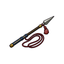 Rope dart | 14 damage, 1.6 s | A steel dart thrown out and pulled back. |
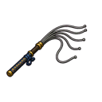 Whip sword | 18 damage, 1.9 s | Flexible steel bands that lash like a whip. |
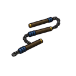 Three-section staff | 14 damage, 1.6 s | Strikes around a guard and turns a block into a wrap. |
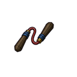 Nunchaku | 11 damage, 1.2 s | Fast, hard blows from every angle. |
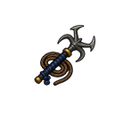 Kaginawa grappling hook | 11 damage, 1.6 s | A climbing tool first, a weapon when it has to be. |
Polearms
| Weapon | Hit | What it is good at |
|---|---|---|
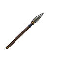 Yari spear | 19 damage, 2.0 s | Keeps a foe at a distance. No research needed. |
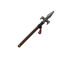 Jūmonji cross spear | 20 damage, 2.1 s | Side blades that hook, cut and trap a weapon. |
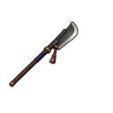 Bisentō polearm | 24 damage, 2.6 s | A broad cleaving blade on a long staff. No research needed. |
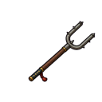 Sasumata polearm | 12 damage, 1.9 s | A fork that pins a foe at arm's length. No research needed. |
Parrying and close weapons
| Weapon | Hit | What it is good at |
|---|---|---|
| Sai | 11 damage, 1.3 s | Catches blades and strikes pressure points. |
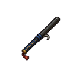 Jitte | 12 damage, 1.4 s | A guard's truncheon that disarms rather than kills. No research needed. |
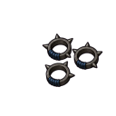 Kakute spiked rings | 9 damage, 1.0 s | Spiked rings worn on the fingers. |
Throwing tools
| Weapon | Range | What it is good at |
|---|---|---|
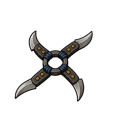 Fūma shuriken | 25 cells | A giant folding star that spins far and cuts deep. |
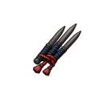 Bō-shuriken spikes | 20 cells | Straight spikes thrown in quick volleys. |
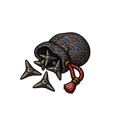 Makibishi caltrops | 15 cells | Scattered spikes: anyone in the spread is stabbed in the feet and slowed. |
Tips
- Damage and timing above are the weapon's main attack at normal quality. Better quality and stuff hit harder.
- The ninja tool kit can keep a blade as a sidearm and swap to it when an enemy comes close.